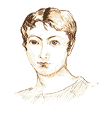
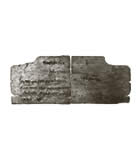

The Vindolanda Tablets
Cerialis, the commander fo the fort of Vindolanda, had like other senior officers been able to bring his family with him to this posting. They lived n the residence of the commanding officer, called the praetorium

His two children had come to the fort feeling great excitement, as Vindolanda was on the northern frontier of the Roman province and provided protection against the native tribes to the north.
They had thought that they might see some of these fierce warriors about whom they had heard exciting stories from the soldiers based at Vindolanda. So far though there had not been any sighting to match the thrilling stories and the children's lives still contained activiites of an ordinary nature.
They still had to practise their Latin and for this they used wooden tablets which they wrote on in ink using a reed pen.
When practising their writing they sometimes used the work of the Roman poet Virgil, whose poems they would copy onto the wooden tablets, or write down some lines that they had memorized.
The children were usually not too keen to study but their mother, Lepidina, would not listen to their protests. They must practise their Latin writing. After all, what would their literate slave think if the commander's children could not write as well as he did?